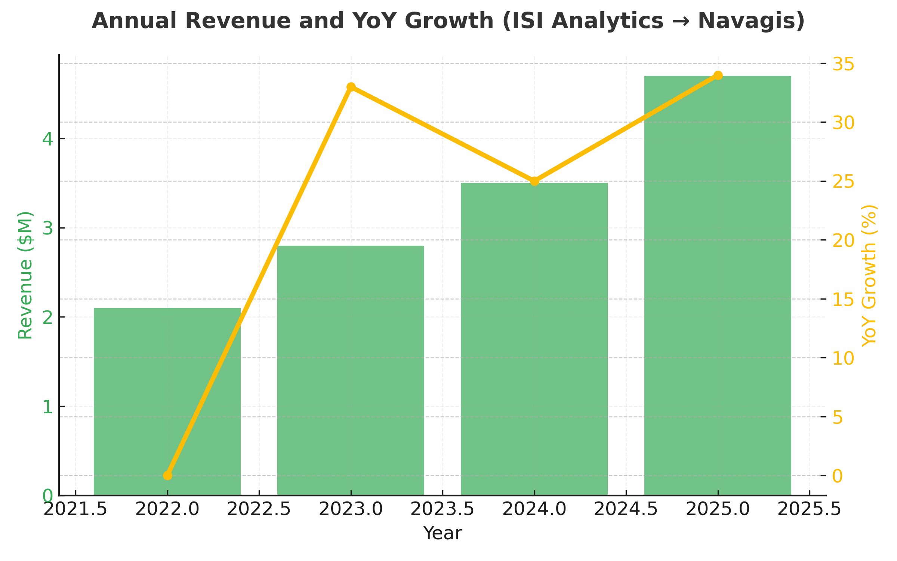
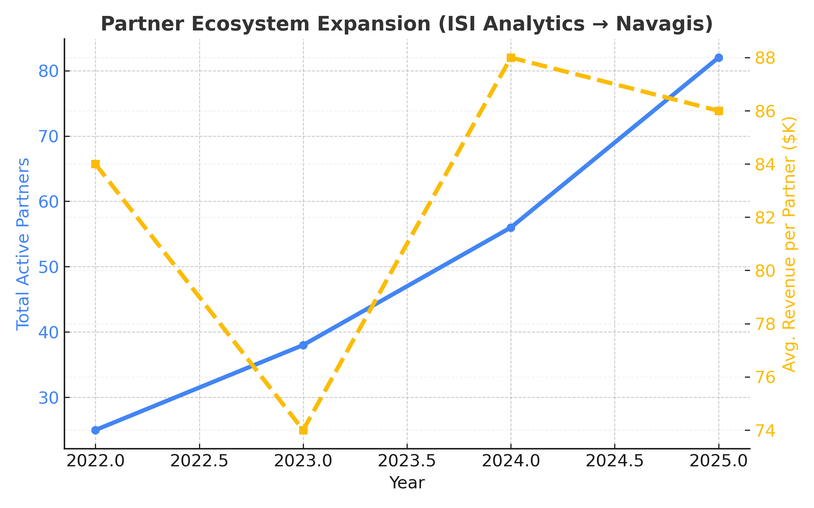
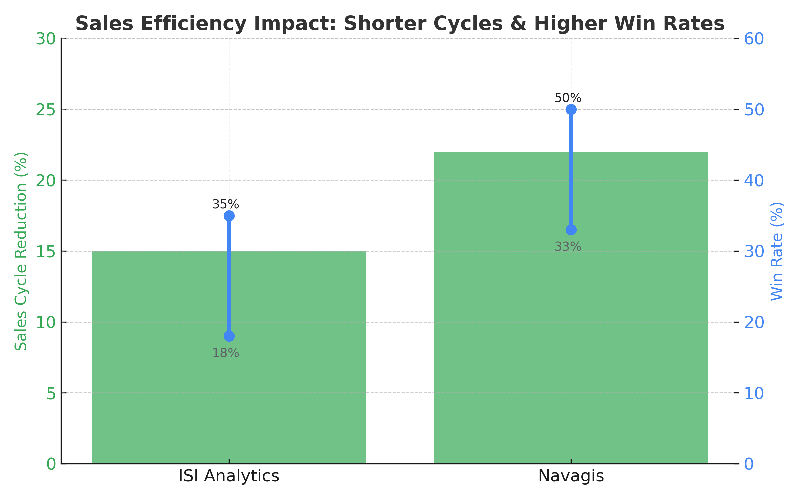

Analytics Work Samples
Below are examples of dashboards and performance visualizations that highlight my data-driven approach to revenue optimization and operational efficiency.
- Revenue Acceleration Command Center: Territory coverage and pricing dashboards that lifted ARR growth 28% and cut ramp time by two quarters.
- Enterprise Pipeline Orchestration: Stage velocity automation aligning SDR, AE, and CS motions to sustain 4x coverage on $80M+ enterprise pursuits while trimming cycle time 30%.
- Partner Co-Sell Wins: Hyperscaler and ISV co-selling playbooks that doubled ACV on strategic deals and accelerated $12M TCV through joint exec alignment.
Monthly Quota vs. Total Sales Attainment
This visualization demonstrates month-over-month quota performance compared to total sales, showcasing consistency and growth over time.

Partnerships & GTM Analytics
Visual summaries of how strategic alliances, hyperscaler collaboration, and co-sell programs have driven measurable growth and partner impact across ecosystems.


Revenue Growth & Sales Leadership
Driving growth has meant expanding into new geographies and industries while balancing the portfolio across net-new, expansion, and partner-influenced deals. The programs highlighted below capture market expansion, healthier product mix, accelerated cycle times, and the win-rate improvements that came from clearer qualification and enablement.
- Elevated annual recurring revenue by simultaneously growing top of funnel and improving YoY conversion from pilot to scale.
- Built a verticalized approach that concentrated coverage on the industries generating the majority of bookings while seeding new logo growth in emerging segments.
- Reduced sales cycle duration and boosted win rates through tighter deal qualification, buyer-aligned messaging, and co-selling with technology partners.


